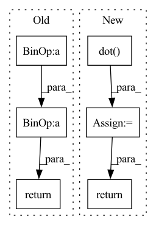

Pattern ID :41874
Before Change
self.cost = cost_data
def predict(self, X):
Y = X*self.k+ self.b
return Y
def batch_gradient_decent(self, theta, X, y, epoch, alpha=0.01):
"""After Change
def predict(self, X):
X = np.insert(X, 0, 1, axis=1)
y_pred = X.dot( self.final_theta)
return y_pred
def batch_gradient_decent(self, theta, X, y, epoch, learning_rate):
"""In pattern: SUPERPATTERN
Frequency: 3
Non-data size: 6
Instances Fragment ID: 117371902
Project Name: skylark0924/machine-learning-is-all-you-need
Commit Name: af74b6d237df619c35542adc6065ab7a507ad306
Time: 2020-04-06
Author: 24936522+Skylark0924@users.noreply.github.com
File Name: 1Single_Linear_Regression/1Single_Linear_Regression.py
M Class Name: Skylark_LinearRegression
N Class Name: Skylark_LinearRegression
M Method Name: predict(2)
N Method Name: predict(2)
M Parent Class:
N Parent Class:
M File Name: 1Single_Linear_Regression/1Single_Linear_Regression.py
N File Name: 1Single_Linear_Regression/1Single_Linear_Regression.py
M Start Line: 38
M End Line: 39
N Start Line: 78
N End Line: 80
Before Change
a, sa = smooth_line(a.points, point_count)
b, sb = smooth_line(b.points, point_count)
dists = np.linalg.norm(a - b, axis=1)
dists = (dists[:-1] + dists[1:]) * 0.5
s = np.sum(dists) * 0.5 * (sa + sb) / area
return abs(1 - s)
@attrs
class CaptionsMatcher(AnnotationMatcher):After Change
// area based on the maximum point distance and line length.
max_area = np.max(dists) * max(np.sum(a_steps), np.sum(b_steps))
area = np.dot( dists, a_steps + b_steps) * 0.5 * 0.5 / max_area
return abs(1 - area)
@attrs
class CaptionsMatcher(AnnotationMatcher): Fragment ID: 117371870
Project Name: openvinotoolkit/datumaro
Commit Name: 4b53be73721c23738592db619b89fdb1cc18f2fe
Time: 2021-12-22
Author: maxim.zhiltsov@intel.com
File Name: datumaro/components/operations.py
M Class Name: LineMatcher
N Class Name: LineMatcher
M Method Name: distance(2)
N Method Name: distance(2)
M Parent Class: _ShapeMatcher
N Parent Class: _ShapeMatcher
M File Name: datumaro/components/operations.py
N File Name: datumaro/components/operations.py
M Start Line: 771
M End Line: 785
N Start Line: 776
N End Line: 809
Before Change
self.cost = cost_data
def predict(self, X):
Y = X*self.k+ self.b
return Y
def batch_gradient_decent(self, theta, X, y, epoch, alpha=0.01):
"""After Change
def predict(self, X):
X = np.insert(X, 0, 1, axis=1)
y_pred = X.dot( self.final_theta)
return y_pred
def batch_gradient_decent(self, theta, X, y, epoch, learning_rate):
""" Fragment ID: 117371903
Project Name: skylark0924/machine-learning-is-all-you-need
Commit Name: af74b6d237df619c35542adc6065ab7a507ad306
Time: 2020-04-06
Author: 24936522+Skylark0924@users.noreply.github.com
File Name: 2Multiple_Linear_Regression/2Multiple_Linear_Regression.py
M Class Name: Skylark_LinearRegression
N Class Name: Skylark_LinearRegression
M Method Name: predict(2)
N Method Name: predict(2)
M Parent Class:
N Parent Class:
M File Name: 2Multiple_Linear_Regression/2Multiple_Linear_Regression.py
N File Name: 2Multiple_Linear_Regression/2Multiple_Linear_Regression.py
M Start Line: 38
M End Line: 39
N Start Line: 81
N End Line: 83